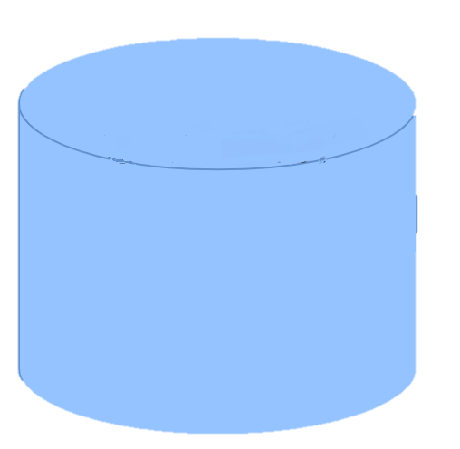
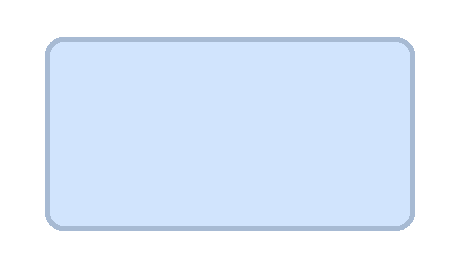
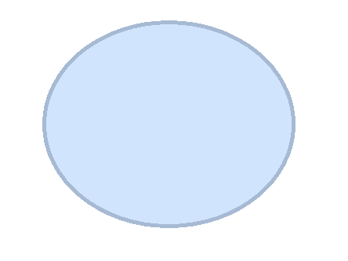

<p-card>
  <div class="p-grid">
    <div class="p-md-12" style="float: left">
      <p-radioButton
        (onFocus)="onFocusTimeFilter($event)"
        class="radio-btn"
        value="1"
        label="Last Run"
        [(ngModel)]="timeOption"
      >
      </p-radioButton>

      <p-radioButton
        (onFocus)="onFocusTimeFilter($event)"
        class="radio-btn"
        value="2"
        label="Last 24 Hours"
        [(ngModel)]="timeOption"
      >
      </p-radioButton>
      <p-radioButton
        (onFocus)="onFocusTimeFilter($event)"
        class="radio-btn"
        value="3"
        label="Today"
        [(ngModel)]="timeOption"
      >
      </p-radioButton>
    </div>
    <div [ngClass]="{ 'p-md-12': !showTimeline, 'p-md-8': showTimeline }">
      <div class="p-grid">
        <div class="p-md-2">
          <div class="network-legends">
            <div class="item">
              <div>
                
              </div>
              <div>Selected System</div>
            </div>
            <div class="item">
              <div>
                
              </div>
              <div>Sender</div>
            </div>
            <div class="item">
              <div>
                
              </div>
              <div>Receiver</div>
            </div>
          </div>
        </div>
        <div class="p-md-10">
          <div id="network"></div>
        </div>
      </div>
    </div>
    <div [hidden]="!showTimeline" class="p-md-4">
      <div style="float: right">
        <button
          pButton
          type="button"
          icon="pi pi-times"
          (click)="showTimeline = false"
          class="p-button-raised p-button-text p-button-plain"
        ></button>
      </div>
      <h2>{{ submission.processName }}</h2>
      <h3>
        {{ submission.isParent ? "Parent " : "" }}Submission:
        {{ submission.submissionId }}
      </h3>
      <div
        id="timeline_chart"
        *ngIf="submission.isParent && submission.submissionId > 0"
      ></div>
      <app-submissions-steps
        *ngIf="submission.submissionId > 0 && !submission.isParent"
        [processId]="submission.submissionId"
      >
      </app-submissions-steps>
      <div *ngIf="submission.submissionId === 0">No submission available.</div>

      <table *ngIf="showTimeline" class="relationship-table">
        <tr>
          <td>Submission Details</td>
          <td>
            <p>
              Start Time: {{ submission.startTime }}
              <i *ngIf="submission.scheduledSubmission"
                >(Expected to start at
                {{ submission.scheduledSubmission.startTime }})</i
              >
            </p>
            <p>
              End Time: {{ submission.endTime }}
              <i *ngIf="submission.scheduledSubmission"
                >(Expected to end at
                {{ submission.scheduledSubmission.endTime }})</i
              >
            </p>
            <div
              *ngIf="!submission.isParent && submission.notes"
              [innerHTML]="'Notes: ' + submission.notes"
            ></div>
          </td>
        </tr>
      </table>

      <br />

      <div style="width: 370px; float: right" *ngIf="showAverage">
        <div style="background: lightgray">
          <b>
            <span> << </span>&nbsp;&nbsp;
            <span style="font-size: 15px">
              {{ submission.processName }}
            </span>
            &nbsp;&nbsp;
            <span style="font-size: 14px"> Last 6 months average </span>
          </b>
        </div>

        <table class="table-1">
          <br />
          <tr>
            <td width="280">Avg Run Time</td>
            <td width="100px" align="left">
              <b> {{ avgRunTime }} min </b>
            </td>
          </tr>
          <br />
          <tr>
            <td width="280px">Avg Record count</td>
            <td width="100px" align="left">
              <b> {{ avgRecordCount }}k </b>
            </td>
          </tr>
          <br />
          <tr>
            <td width="280px">Avg Warning</td>

            <td width="100px" align="left">
              <b> {{ avgWarning }} % </b>
            </td>
          </tr>
          <br />
          <tr>
            <td width="280px">Average Errors</td>
            <td width="100px" align="left" style="color: red">
              <b> {{ avgError }} % </b>
            </td>
          </tr>
        </table>
      </div>
    </div>
    <div class="p-md-12">
      <app-ge-status-legend></app-ge-status-legend>
    </div>
  </div>
</p-card>
